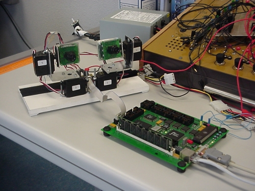

El 20 de Marzo de 2002 se publicó la primera noticia en Iearobotics: Proyecto Labobot: control de sevos desde una FPGA. Hace exactamente 8 años. Llevamos todo ese tiempo compartiendo nuestros diseños, software y experiencias.
Esta web es nuestro lugar en el ciberespacio, al margen de cualquier empresa o institución, donde podemos publicar información para que perdure en el tiempo.
¡¡Felicidades!!
Congratulations! And keep up the good work!
Thanks Per 🙂
Sigue así. Muchas gracias por compartir tanto conocimiento. ¡Eres un crack!
Un abrazo,
Isaac
Gracias Isaac 😉
Felicidades para todos!
Pues me sumo al carro de los fans de Iea Robotics y espero que sigáis en la misma línea otros 100 años mas. Graias por vuestras valiaosas aportaciones,sois un ejemplo a seguir.
Un abrazo
Gracias Fernando 😉